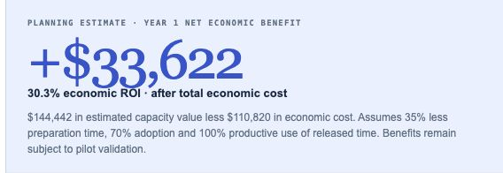

Use AsterVale’s business baseline, issued quote and our ROI template to build an Excel ROI model and a customer-facing HTML one-pager. Show expected value, costs and sensitivity, distinguishing the value of released working time from actual cash savings.
For value estimates, I prefer to keep the key assumptions beside the figures and label results based on assumptions as “Planning estimate”.
Noumi
Found 4 files grounding the ROI estimate in workload, pricing and calculation rules.
- Workload and effort baseline:
 AsterVale_Opportunity_Brief.md
AsterVale_Opportunity_Brief.md - Quoted supplier fees:
 AsterVale_Quote.xlsx
AsterVale_Quote.xlsx - Workflow scope: Noumi_Product_Capabilities.md
- Calculation structure: ROI_Calculation_Template.xlsx
Noumi remembered your preference

“Planning estimate” and its assumptions appear beside the result.
Keep key assumptions beside the figures and label assumption-based results “Planning estimate”.
DONECompleted
4 source files selected · 2 deliverables shown. Previews below are rendered from the supplied files.
Prepared the Excel ROI model and HTML one-pager for customer review.
Planning estimate: $33,622 Year 1 net economic value · 30.3% economic ROI · $0 modeled cash savings.
Validate time reduction, adoption and productive use in the proposed 12-user pilot.
Next: update the model with pilot evidence and confirm quote terms and approvals before rollout.